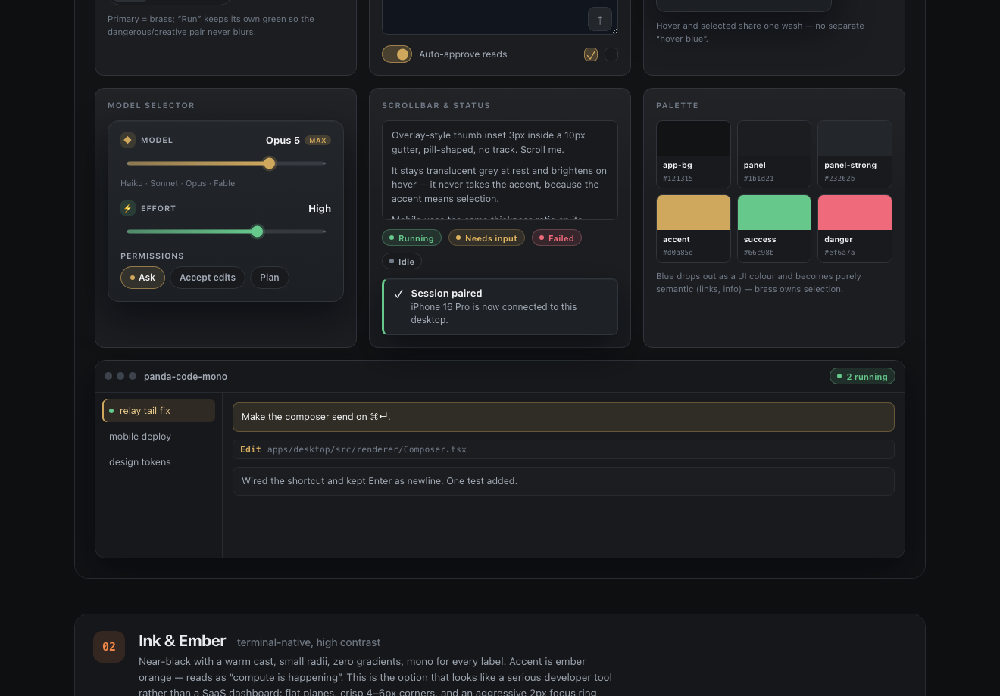
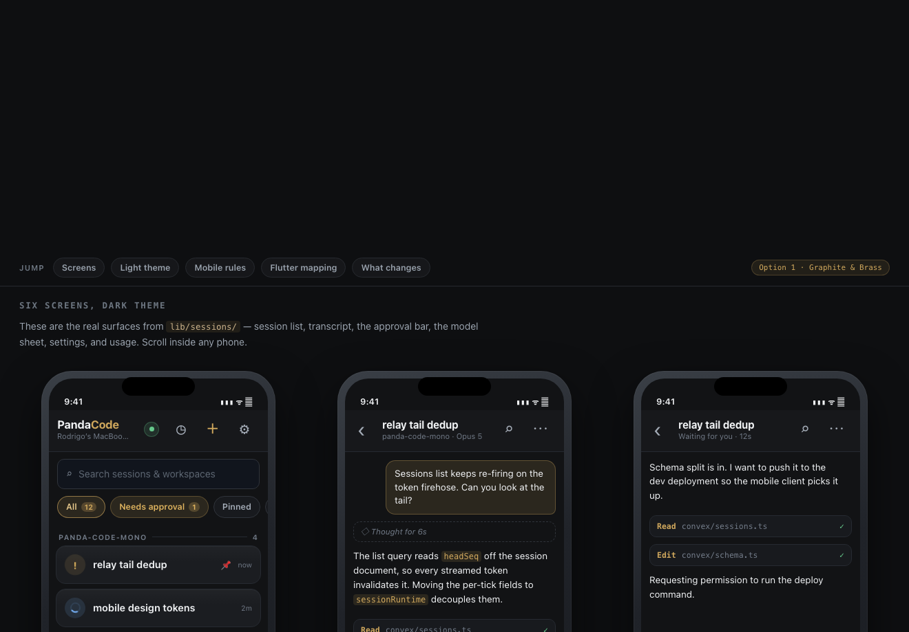

Persistent threads
Run several sessions at once, keep them alive, and jump straight to the one that needs attention.
Local-first agent workbench
Panda Code is a macOS app for running coding-agent sessions as persistent threads. The desktop app works entirely locally. When you want phone control, pair it with a relay you host yourself.
git clone https://github.com/PandaPDV/panda-code.git cd panda-code pnpm install pnpm --dir apps/desktop package:mac

The normal path has no hosted account, no inbound ports, and no
project data uploaded by Panda Code. It runs your existing
claude and codex CLIs as external programs.
Run several sessions at once, keep them alive, and jump straight to the one that needs attention.
Tool calls, diffs, approvals, thinking blocks, and exports are rendered as readable conversation state.
Track token spend by session and over time without flattening the workflow into raw terminal output.
The optional Flutter companion talks to a Convex deployment you own. Your Mac and phone exchange an encryption key through the pairing QR code, and the relay carries ciphertext plus routing metadata.
Create your relay. Run Convex under your account and keep its URL local.
Build the desktop with the relay URL. Leave it unset for local-only mode.
Pair from the phone. The QR code carries the one-time code and encryption key.

The public repo includes explicit setup instructions for humans and coding agents. Start with AGENTS.md, then run the checks for the surface you changed.
pnpm typecheck pnpm test cd apps/mobile && flutter analyze && flutter test